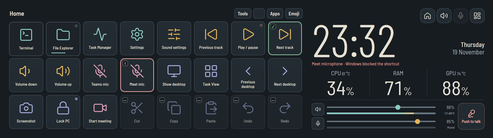
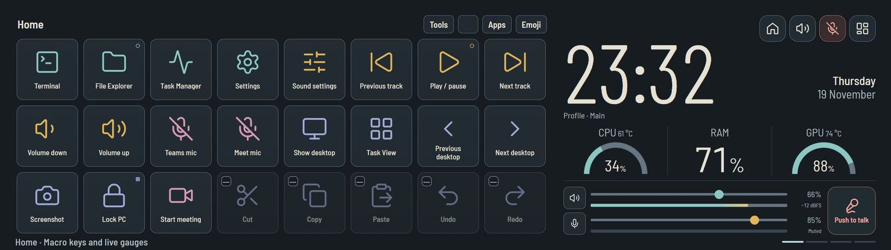

App-aware shortcuts
Build pages in the visual editor, assign them to Windows apps, and run shortcuts or multi-step macros with a tap, hold, or double tap.
Explore the editorCORSAIR XENEON EDGE Windows
Lastra turns the XENEON EDGE into a macro deck that follows the app you’re using. Tap to run a shortcut, adjust the Windows mixer, or check what your PC is doing.
Windows 10 or 11 · x64 · Open source under MIT

Build pages in the visual editor, assign them to Windows apps, and run shortcuts or multi-step macros with a tap, hold, or double tap.
Explore the editorAdjust Windows output and app volumes, mute microphones, or use push-to-talk. Dashboard brings playback, the calendar, and a Pomodoro timer together.
See the deck viewsTrack CPU, GPU, memory, temperatures, and available power readings in an overview you can arrange. Open charts to see how readings change over time.
Read the telemetry guide
The demo uses sample media and telemetry.
Lastra works with the panel as an extended Windows display, in landscape or portrait. You can use it while iCUE is closed.